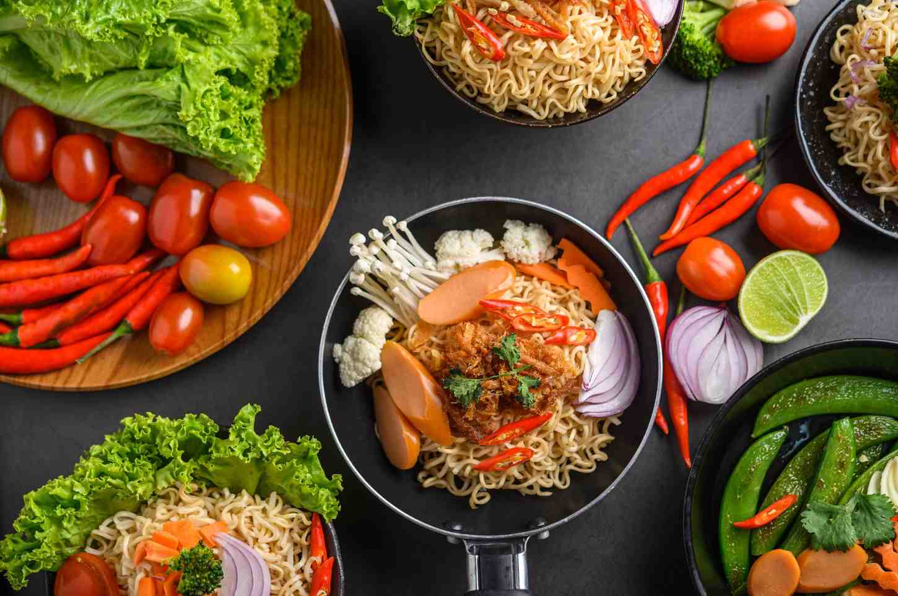

Favourites
The pleasure of leafing through a spattered and dog-eared cook book is dying out in the digital age, but you can still build your own archive of favourite recipes on our site. Currently the page culls your collection when you reach 10, eliminating the oldest save first, but watch this space... We've plans to grow!



Made with ❤️ by:
Nicholas Lee
Patrick Li
Dan Nadler
Karla Wubbenhorst
and Allan Yuen
Copyright © 2023